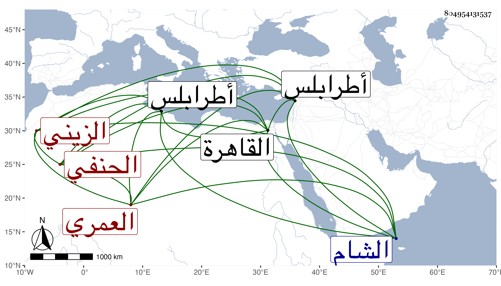

0902Sakhawi.DawLamic.ITO20230111-ara1.EIS1600.804954131537
Biography ID: 804954131537
1312
يونس بن عمر بن جربغا الزيني العمري الحنفي والد عمر الماضي وجده . كان جده نائبا بطرابلس وبها مات وأما والده فعمل الدوادارية لجمال الدين الأستادار ولسودون من عبد الرحمن وغيرهما. ومات في آخر الأيام الأشرفية برسباي بعد أن أنجب هذا . وكان مولده بعد سنة خمس وعشرين وثمانمائة بالقاهرة ونشأ بها فحفظ القرآن وربع العبادات من القدوري ولزم خدمة فيروز النوروزي وعمل الدوادارية عنده فأثرى وحصل الإقطاعات والدور وتوجه في بعض ضرورات الأشرف إينال إلى الشام فزاد تموله وراموا بعد وفاة مخدومه الاستقرار في الوزارة فاستعان بقايتباي لاختصاصه به وبغيره في الدفع عن نفسه فلم يجد بدا من ذلك واستقر في أيام الظاهر خشقدم بعد المجد بن البقري وقرر معه البباوي ناظر الدولة وباشر الزيني الوزر فلم ينتج فيه وظهر عجزه وعدم كفايته فصرف عاجلا بالبباوي بعد أن تكلف هذا أموالا جمة كاد ينكشف حاله بها لولا قايتباي ، ولزم بيته في حارة الزيني عبد الباسط مقتصرا على المطالعة والنظر في التاريخ ونحوه وكأنه جمع في التاريخ شيئا فإنه كان التمس مني ترجمة عبد الباسط وابن زنبور وغيرهما بل اختصر حياة الحيوان، وسمعت أنه كان عفيفا عن القاذورات محبا في العلماء بحيث تردد للكافياجي وغيره وأما الزين قاسم الحنفي وكان يجيء إليه كثيرا لإقراء ولده ، واجتمع بي مرة فأظهر مزيد الأدب والتودد . مات في ليلة الجمعة منتصف ذي القعدة سنة ست وسبعين ودفن من الغد ، ويقال أنه كان مسيكا غفر الله له ورحمه وإيانا .
